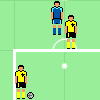

Рыбные против Маршалов

Системные требования:
PII 230 Mhz, 128 Mb, IE or Opera or Firefox, SVGA.
9 февраля 2007 года состоялся выход долгожданной игры независимых литовских разработчиков «Рыбные против Маршалов».
«Рыбные против Маршалов» представляют собой симулятор интереснейшего поединка двух команд за право выхода из группы. Голы и промахи, контратаки и костика, смазавшиеся мячи и отчаянные прыжки вратарей — не должны оставить равнодушными заядлых игроков.
Мы постарались максимально приблизить характеристики матча к реальности, — говорит один из руководителей команды разработчиков. — Учли и опыт игроков Маршала, и рвение молодых рыбных игроков, и поддержку домашнего стадиона... Согласен, пользовательский интерфейс выполнен немного коряво — но ведь это всего-лишь первый релиз. И если всё пойдёт успешно, мы продолжим работу в том же духе.
На сегодняшний день, это один из лучших футбольных симуляторов, — говорит знаменитый тренер Дарко Оцоколич на церемонии презентации. — Такие игроки как Дзиамид Бледзко или, не дай боже, Сидар Ледакович уже не могут стопроцентно показывать себя на тренировках. А вот заглядывая через их плечо на экран монитора, я по результату их игры сразу могу решить, включать их в стартовый состав или не стоит.
Редакция сайта Кубка Колотиловки (Мамин Сибиряк) с удовольствием представляет своим читателем возможность насладиться игрою в предверии заключительных групповых матчей:
Играть в «Рыбные против Маршалов»
В конце следующего квартала ожидаются версии игры для Sony Play Station и мобильных телефонов с полифонией.